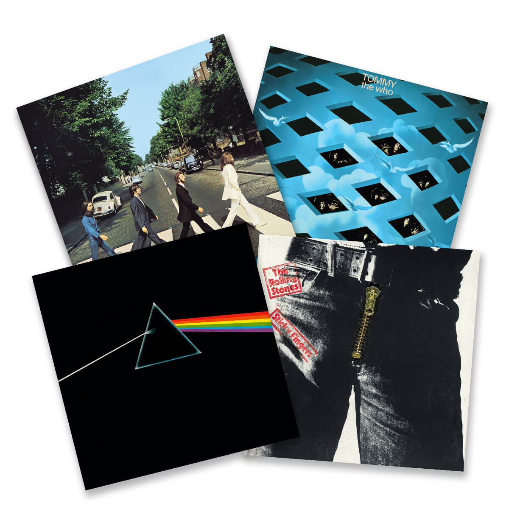

Rock
Após a explosão do Rock ‘n’ Roll nos anos 50, a popularidade dos artistas aumentou e estes tornaram-se ídolos da indústria musical. Com essa crescente popularidade e influência, muitos dos artistas mais conhecidos passaram a ter um total poder de decisão em relação às capas dos seus álbuns. Os artistas eram agora responsáveis pela escolha do designer e do fotógrafo e muitos escolhiam mesmo ser eles próprios a fazer o design.
Os Beatles, Rolling Stones e Pink Floyd foram bandas que decidiram ter um papel maior no design das suas capas de álbum, estando os seus membros frequentemente envolvidos no processo criativo juntamente com o diretor de arte, designer e fotógrafo.
Esse desejo de participar no processo criativo visual do álbum levou a que a capa ganhasse uma maior importância, o que por sua vez se traduziu num aumento de liberdade para os designers de capas. No caso do rock essa liberdade vinha também associada a orçamentos generosos, o que permitiu que se criassem extravagâncias como a capa de Sgt. Pepper’s Lonely Hearts Club Band ou Ummagumma.
Os Beatles, Rolling Stones e Pink Floyd foram bandas que decidiram ter um papel maior no design das suas capas de álbum, estando os seus membros frequentemente envolvidos no processo criativo juntamente com o diretor de arte, designer e fotógrafo.
Esse desejo de participar no processo criativo visual do álbum levou a que a capa ganhasse uma maior importância, o que por sua vez se traduziu num aumento de liberdade para os designers de capas. No caso do rock essa liberdade vinha também associada a orçamentos generosos, o que permitiu que se criassem extravagâncias como a capa de Sgt. Pepper’s Lonely Hearts Club Band ou Ummagumma.
